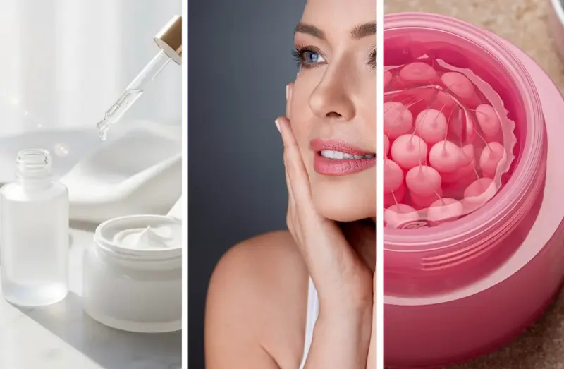
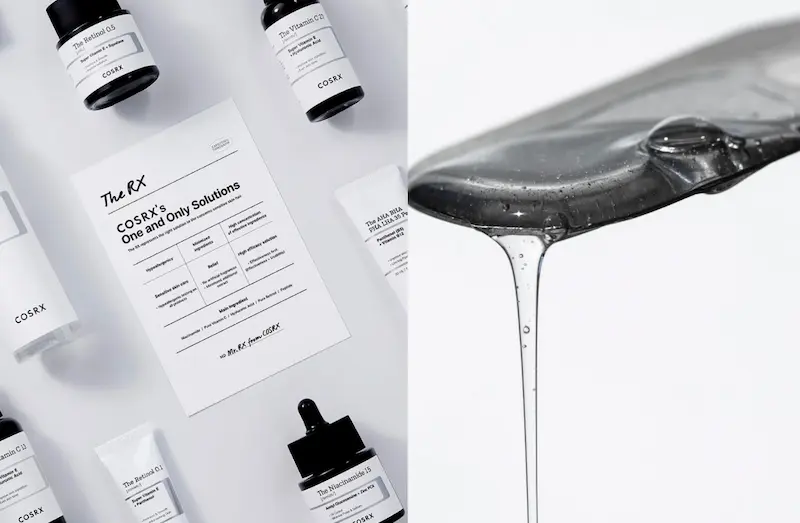
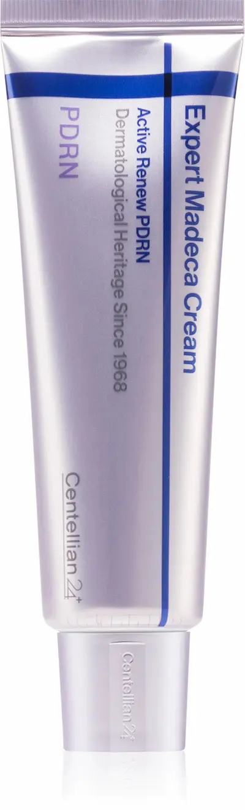

PDRN în cosmetică: ghid științific despre ingredientul studiat pentru regenerarea pielii
PDRN (Polydeoxyribonucleotide, polidezoxiribonucleotidă) este un amestec de fragmente de ADN care atrage atenția industriei cosmetice și estetice datorită cercetărilor privind rolul său potențial în procesele de reparare a țesuturilor. Ingredientul este deosebit de vizibil în industria coreeană de beauty, unde este utilizat în produse de îngrijire concepute pentru a susține hidratarea, netezimea și un aspect mai sănătos al pielii.
Interesul pentru PDRN este legat de mai multe mecanisme biologice studiate în literatura științifică, inclusiv activarea receptorilor de adenozină A2A și participarea nucleotidelor la procesele de reparare celulară. În cercetarea medicală, PDRN a fost studiat în special în contextul vindecării rănilor și al refacerii țesuturilor. Totuși, dovezile obținute în urma utilizării medicale nu pot fi transferate automat asupra serurilor, fiolelor și cremelor cosmetice.
Pentru a evalua produsele cu PDRN, este important să analizăm nu doar denumirea ingredientului de pe ambalaj, ci și lista completă INCI, proveniența materiei prime, caracteristicile formulei, concentrația ingredientului activ, stabilitatea produsului și studiile realizate asupra produsului cosmetic finit. Simpla mențiune PDRN nu garantează un anumit nivel de eficacitate sau o anumită profunzime de pătrundere a ingredientului în piele.
În acest ghid Estetica Lens, vom explica ce este PDRN, cum se obține, prin ce se deosebește de polinucleotide (PN), ce efecte sunt studiate în literatura științifică, cum poate fi identificat în compoziția produselor cosmetice coreene și ce afirmații ale brandurilor merită analizate cu atenție atunci când alegem un produs.
Descoperă serviciileGhid complet despre PDRN în cosmetică
Ce este PDRN?
Originea polidezoxiribonucleotidelor, structura lor moleculară și motivele pentru care acest ingredient atrage tot mai mult interes în cosmetologia modernă.
Cum acționează PDRN?
Receptorii de adenozină A2A, metabolismul nucleotidelor și mecanismele biologice studiate în procesele de reparare a țesuturilor.
PDRN sau PN: care este diferența?
Polidezoxiribonucleotide și polinucleotide: particularități terminologice, caracteristici moleculare și utilizări în industria estetică.
Sursele și obținerea PDRN
Materii prime de origine animală și vegetală, metode de obținere și purificare, precum și aspecte legate de origine, calitate și trasabilitate.
PDRN în lista INCI
Cum pot fi recunoscute denumiri precum Sodium DNA și alte ingrediente înrudite, cum se analizează formula și ce limite are informația oferită de lista ingredientelor.
Proprietăți și beneficii potențiale
Hidratarea, elasticitatea, aspectul pielii și procesele de reparare: ce efecte sunt studiate și cât de convingătoare sunt dovezile disponibile.
PDRN în cosmeticele coreene
Ampule, seruri, creme și alte produse K-beauty: cum evaluăm compoziția, scopul produsului și fundamentarea afirmațiilor producătorului.
Cum alegi un produs cu PDRN?
Ce trebuie urmărit la evaluarea formulei, a informațiilor producătorului, a toleranței produsului și a compatibilității acestuia cu nevoile pielii.
PDRN în combinație cu alte ingrediente
Formule cu PDRN și ingrediente hidratante, peptide, niacinamidă și alte substanțe active: compatibilitate, toleranță și particularități ale rutinei de îngrijire.
Întrebări frecvente despre PDRN
Răspunsuri despre originea ingredientului, eficacitatea sa în produsele cosmetice, utilizare și diferențele dintre diverse produse.

Ce este PDRN?
PDRN (Polydeoxyribonucleotide, polidezoxiribonucleotide) este un amestec de fragmente de acid dezoxiribonucleic (ADN), studiat pentru rolul său potențial în procesele de reparare a țesuturilor. Spre deosebire de moleculele cosmetice mici, cu o structură unică și bine definită, PDRN este un material ale cărui caracteristici depind de lungimea fragmentelor, distribuția maselor moleculare, sursa materiei prime și tehnologia de obținere.
Interesul pentru PDRN nu se datorează doar popularității cosmeticelor coreene. Acest material este studiat și în context medical, în special în legătură cu vindecarea rănilor și refacerea țesuturilor. Literatura științifică descrie mecanisme asociate receptorilor de adenozină A2A și reutilizării metabolice a nucleotidelor de către celule. Totuși, existența unui mecanism biologic plauzibil nu demonstrează, în sine, că orice produs cosmetic cu PDRN oferă un efect similar.
În industria coreeană de beauty, PDRN se regăsește în seruri, fiole, creme și alte produse promovate pentru îngrijirea pielii cu semne de uscăciune, textură neuniformă și pierdere a fermității. La evaluarea acestor produse, este important să diferențiem proprietățile materiei prime, rezultatele studiilor asupra unei formule specifice și afirmațiile publicitare ale brandului. Datele privind preparatele injectabile nu pot fi transferate direct asupra produselor cosmetice pentru uz topic.
Fragmente de ADN
PDRN nu este o singură moleculă mică, ci un ansamblu de fragmente de ADN. Caracteristicile acestora depind de materialul de origine și de procesul de producție. Prin urmare, două ingrediente denumite PDRN nu sunt neapărat identice în totalitate.
Mecanisme biologice studiate
În cercetări, PDRN este analizat în legătură cu activarea receptorilor de adenozină A2A și cu salvage pathway — calea prin care celulele reutilizează componente disponibile pentru sinteza nucleotidelor. Relevanța acestor mecanisme depinde de sistemul studiat și de condițiile de utilizare.
Utilizarea în cosmetică
În produsele pentru uz topic, PDRN este utilizat ca ingredient în formule concepute pentru a îmbunătăți aspectul și starea pielii. Eficacitatea depinde nu doar de materia primă, ci și de concentrație, caracteristicile formulei, stabilitate și disponibilitatea ingredientului la nivelul pielii după aplicare.
Mai mult decât denumirea de pe ambalaj
Mențiunea PDRN de pe partea frontală a ambalajului nu oferă informații complete despre originea materiei prime, distribuția lungimii fragmentelor, puritatea sau concentrația ingredientului. Pentru o evaluare profesională, este necesară analizarea listei INCI și a documentației tehnice puse la dispoziție de producător.
Cum acționează PDRN: mecanisme biologice și efecte asupra pielii
Interesul pentru PDRN este legat de studiile privind refacerea țesuturilor și reglarea proceselor celulare. Literatura științifică descrie mai multe mecanisme potențial relevante, inclusiv interacțiunea cu receptorii de adenozină A2A și participarea produselor de degradare a ADN-ului la resinteza nucleotidelor. Totuși, importanța acestor mecanisme depinde de caracteristicile preparatului, calea de administrare și țesutul studiat.
Ce înseamnă acest lucru pentru produsele cosmetice? Activitatea biologică a unui ingredient în condiții de laborator și efectul obținut după aplicarea pe piele nu sunt același lucru. Pentru evaluarea unui produs topic trebuie luate în considerare caracteristicile moleculare ale PDRN, stabilitatea sa în formulă, disponibilitatea la nivelul pielii și rezultatele studiilor asupra produsului finit. Este deosebit de important să nu echivalăm rezultatele studiilor cu produse injectabile cu eficacitatea cremelor, fiolelor și serurilor destinate îngrijirii la domiciliu.
PDRN și PN: care este diferența dintre polidezoxiribonucleotide și polinucleotide?
PDRN (polydeoxyribonucleotide) și PN (polynucleotides) sunt termeni utilizați în literatura științifică și în industria estetică pentru a descrie polimeri înrudiți, formați din nucleotide. În contextul dermatologiei, ambele materiale sunt considerate, de regulă, derivați ai ADN-ului. Principalele diferențe țin de lungimea lanțurilor, masa moleculară, proprietățile fizico-chimice și posibilele particularități de utilizare.
Este important de reținut că, în prezent, nu există o limită universală acceptată care să diferențieze fără echivoc toate produsele PDRN de cele PN. Unele articole de sinteză propun clasificări în funcție de masa moleculară, însă terminologia poate varia între studii și materialele comerciale ale producătorilor. Prin urmare, denumirea ingredientului nu permite, de una singură, identificarea exactă a caracteristicilor sale moleculare sau anticiparea eficacității.
Comparație între PDRN și PN
| Criteriu | PDRN | PN |
|---|---|---|
| Denumirea completă | Polydeoxyribonucleotide | Polynucleotides |
| Structura moleculară | De regulă, fragmente de ADN relativ scurte și medii | Adesea, lanțuri de ADN mai lungi |
| Proprietăți fizice | Depind de lungimea lanțurilor și de compoziția preparatului | Pot include o vâscozitate mai pronunțată și formarea unor structuri hidratate |
| Mecanisme studiate | Inclusiv semnalizarea prin receptorii A2A și metabolismul nucleotidelor | Inclusiv proprietățile fizico-chimice ale materialului și interacțiunea cu microambientul tisular |
| Cum se evaluează produsul | În funcție de caracteristicile materiei prime, formulă și studiile realizate asupra produsului concret | În funcție de caracteristicile materiei prime, formulă și studiile realizate asupra produsului concret |
Ce trebuie să știi când alegi un produs cosmetic? Nu se poate considera că PN este automat mai eficient decât PDRN sau invers. De asemenea, calitatea unui produs nu poate fi evaluată doar în funcție de lungimea lanțurilor sau de denumirea ingredientului. Pentru produsele cosmetice de uz topic sunt deosebit de importante datele despre formula finală, stabilitatea și toleranța acesteia, precum și rezultatele studiilor realizate prin aplicarea pe piele.
Atunci când analizezi brandurile coreene, urmărește denumirea exactă a ingredientului, descrierea tehnică a materiei prime, originea declarată și existența unor studii relevante. Dacă producătorul folosește termenii PDRN și PN ca sinonime, merită să soliciți informații suplimentare, fără a presupune automat că afirmația este greșită sau că produsul este de calitate inferioară.
Sursele de obținere a PDRN: materii prime, producție și controlul calității
PDRN (Polydeoxyribonucleotide) este un material format din fragmente de acid dezoxiribonucleic (ADN), utilizat în cercetarea medicală și în dezvoltarea ingredientelor cosmetice. Proprietățile sale depind de originea materiei prime biologice, tehnologia de extracție și purificare, caracteristicile fragmentelor obținute și calitatea materialului final.
Una dintre cele mai cunoscute surse tradiționale de PDRN este ADN-ul peștilor din familia salmonidelor. În special, pentru obținerea anumitor tipuri de materie primă se folosesc țesuturi reproductive ale peștilor. Totuși, denumirea PDRN nu garantează, în sine, aceeași origine, compoziție sau tehnologie de producție la toți furnizorii. De aceea, evaluarea profesională a ingredientului trebuie să se bazeze pe specificațiile produsului concret.
Principalele surse și metode de obținere a PDRN
01. ADN din pești salmonizi
Aceasta este una dintre cele mai cunoscute surse de materie primă, asociată cu metodele tradiționale de obținere a PDRN. Materialul biologic furnizează ADN-ul care este ulterior procesat și purificat. Originea fiecărui lot trebuie să poată fi verificată prin documentația producătorului.
02. Extracția ADN-ului
În procesul de producție, ADN-ul este extras din materialul biologic inițial prin procedee tehnologice adecvate. Scopul acestor etape este obținerea unui material cu caracteristici definite și reducerea conținutului de componente nedorite provenite din materia primă.
03. Fragmentare și purificare
Materialul obținut poate fi procesat pentru a genera fracții cu anumite caracteristici, urmate de etape suplimentare de purificare. Metodele utilizate, distribuția maselor moleculare și criteriile de puritate depind de tehnologia producătorului.
04. Controlul materiei prime finale
După producție, materialul este evaluat pentru a verifica dacă respectă specificațiile stabilite. În funcție de destinația sa, controlul poate include identitatea, puritatea, caracteristicile maselor moleculare, impuritățile reziduale și parametrii microbiologici.
Poate PDRN să aibă o altă origine?
În domeniul biotehnologiei sunt dezvoltate diverse metode de obținere a acizilor nucleici, inclusiv prin procese biotehnologice. Totuși, simpla prezență a ADN-ului într-o materie primă nu înseamnă că aceasta este automat echivalentă cu PDRN-ul tradițional în ceea ce privește structura, proprietățile sau dovezile științifice disponibile.
Dacă un furnizor declară că PDRN are origine vegetală, sintetică sau o altă origine alternativă, trebuie clarificate identitatea exactă a substanței, metoda de producție și caracteristicile ingredientului final. Astfel de afirmații trebuie evaluate pe baza documentației tehnice, nu doar a descrierilor de marketing.
De ce contează originea materiei prime în cosmetică?
Originea și tehnologia de obținere pot influența profilul impurităților, caracteristicile fragmentelor de ADN, stabilitatea și cerințele de control al calității. Totuși, eficacitatea sau siguranța ingredientului nu pot fi stabilite doar pe baza sursei materiei prime: este necesară evaluarea materialului concret și a formulei cosmetice finite.
PDRN de origine piscicolă și reacțiile alergice
Dacă PDRN este obținut din materii prime de origine piscicolă, trebuie luate în considerare proveniența materialului și posibila prezență a proteinelor reziduale. Totuși, originea piscicolă nu permite anticiparea exactă a riscului unei reacții la ingredientul final. Riscul depinde, printre altele, de tehnologia de producție, purificare, impuritățile reziduale și caracteristicile produsului concret.
Fără date justificative, nu se poate afirma că orice tip de PDRN provoacă în mod obligatoriu reacții la persoanele cu alergie la pește. La fel de incorect ar fi să se garanteze absența riscului doar pentru că materia primă a fost purificată. În dezvoltarea produselor cosmetice trebuie avute în vedere documentația furnizorului și evaluarea siguranței formulei finite.
Ce documente să soliciți producătorului de PDRN?
Cum se evaluează profesional calitatea PDRN?
Pentru un brand cosmetic, evaluarea calității începe nu cu denumirea comercială a ingredientului, ci cu identificarea materiei prime și verificarea documentației. Trebuie clarificat ce substanță este furnizată, care sunt caracteristicile sale, în ce concentrație este inclusă în formulă și ce date susțin proprietățile declarate.
Este important să se facă distincția între calitatea analitică a materiei prime și eficacitatea produsului finit. Certificatul de analiză ajută la confirmarea conformității lotului cu specificațiile, dar nu demonstrează, prin el însuși, un efect clinic. De asemenea, rezultatele studiilor asupra preparatelor injectabile nu pot fi transferate automat asupra serurilor și cremelor cu PDRN destinate aplicării externe.
INCI pentru PDRN: cum identifici ingredientul în lista de ingrediente cosmetice
Atunci când analizezi produse cosmetice cu PDRN, este important să diferențiezi denumirea comercială a ingredientului, descrierea științifică a materiei prime și denumirea INCI din lista de ingrediente. PDRN este utilizat frecvent ca termen comercial și profesional pentru un anumit tip de fragmente de ADN, însă această abreviere nu garantează că pe etichetă ingredientul va fi menționat chiar sub denumirea PDRN.
În funcție de materia primă și de nomenclatura utilizată, lista de ingrediente poate include denumiri asociate polinucleotidelor sau derivaților ADN-ului. De exemplu, în formulele cosmetice pot apărea Sodium DNA și Hydrolyzed DNA. Totuși, aceste denumiri nu trebuie considerate automat echivalente cu PDRN: contează identitatea exactă a ingredientului, metoda de obținere și documentația producătorului.

Ce denumiri merită să cunoști?
PDRN
Abreviere de la Polydeoxyribonucleotide. Apare frecvent în descrierile ingredientelor active, în materialele profesionale și în comunicarea de marketing. Pentru analiza compoziției, trebuie identificată și denumirea oficială a materiei prime.
Sodium DNA
Denumire care poate apărea în listele INCI ale unor produse cosmetice promovate ca produse cu PDRN. Aceasta nu înseamnă automat că ingredientul este identic cu orice altă materie primă comercializată sub denumirea PDRN.
Hydrolyzed DNA
Denumire pentru ADN hidrolizat. Hidroliza presupune descompunerea moleculelor, astfel încât caracteristicile acestui ingredient pot diferi de cele ale altor fracții de ADN. Pentru o comparație exactă sunt necesare specificațiile și datele furnizate de producător.
Complex cu PDRN
Materia primă comercială poate fi o soluție sau un complex care conține umectanți, solvenți și alte componente auxiliare. În acest caz, este important să afli conținutul substanței active, nu doar procentul total al complexului introdus în formulă.
De ce nu este suficientă doar lista INCI?
Lista INCI ajută la identificarea ingredientelor declarate, dar, de regulă, nu dezvăluie toate caracteristicile tehnologice ale materiei prime. Doar pe baza denumirii din listă nu se pot determina cu certitudine distribuția maselor moleculare, gradul de purificare, concentrația efectivă a fracției active sau activitatea biologică a unui anumit lot.
Cum evaluezi profesional produsele cosmetice cu PDRN
Dacă analizezi un produs al unui brand coreean sau pregătești un material pentru un public profesionist, începe cu lista INCI completă și descrierea oficială a materiei prime. Apoi verifică dacă brandul precizează concentrația ingredientului activ propriu-zis, oferă date despre stabilitate și susține afirmațiile prin studii relevante pentru produsul cosmetic concret.
Simpla prezență a Sodium DNA, Hydrolyzed DNA sau a unui alt ingredient asociat ADN-ului nu demonstrează eficacitatea clinică a produsului finit. O evaluare riguroasă ține cont de proprietățile materiei prime, concentrație, formulă, mod de utilizare și calitatea dovezilor disponibile.
Proprietățile și beneficiile potențiale ale PDRN pentru piele
PDRN este studiat pentru rolul său potențial în procesele de refacere a țesuturilor și de reglare celulară. Cercetările îl asociază cu mecanisme implicate în vindecare, activitatea fibroblastelor și menținerea matricei extracelulare. Totuși, efectele depind de caracteristicile ingredientului, de formulă și de modul de utilizare.
Susținerea refacerii pielii
PDRN este studiat în contextul refacerii țesuturilor și al reînnoirii epidermei. Cele mai relevante date clinice disponibile provin, până în prezent, în principal din utilizarea medicală.
Fermitate și textură
Studiile experimentale și unele cercetări clinice analizează influența PDRN asupra fibroblastelor și componentelor matricei extracelulare asociate cu fermitatea pielii.
Hidratare și netezime
Produsele cosmetice cu PDRN pot fi concepute pentru a îmbunătăți aspectul și senzația pielii. Rezultatul depinde și de ingredientele hidratante și de formula produsului în ansamblu.
Piele cu semne de fotoîmbătrânire
PDRN este studiat ca ingredient potențial în produsele destinate pielii cu semne de fotoîmbătrânire. Datele privind formulele specifice pentru aplicare topică sunt încă limitate.
Ce este important să ai în vedere?
Datele științifice despre PDRN sunt promițătoare, însă rezultatele studiilor asupra preparatelor injectabile nu pot fi transferate automat asupra serurilor și cremelor. Pentru evaluarea unui produs cosmetic contează concentrația, caracteristicile materiei prime, capacitatea formulei de a face ingredientul disponibil la nivelul straturilor vizate ale pielii și rezultatele testelor efectuate asupra produsului finit.
PDRN în cosmetica coreeană: formule populare și tendințe
Brandurile coreene integrează tot mai mult PDRN în produsele pentru îngrijirea pielii la domiciliu, transformând acest ingredient, cunoscut datorită medicinei estetice, într-o componentă a serurilor, fiolelor, cremelor și măștilor din material textil. Se pune accent în special pe hidratare, fermitatea pielii și îngrijirea aspectului acesteia.
Seruri și fiole
Formulele concentrate sunt adesea prezentate ca produse de îngrijire intensivă. În formulele cu PDRN pot fi incluse și peptide, acid hialuronic și ingrediente hidratante.
Creme și măști-gel
Aceste produse sunt concepute pentru hidratarea și catifelarea pielii, precum și pentru menținerea confortului barierei cutanate. Efectul final depinde de întreaga formulă, nu doar de PDRN.
Combinații de ingrediente active
PDRN este combinat cu peptide, Centella asiatica, ceramide și acid hialuronic. Aceste ingrediente pot completa formula prin propriile proprietăți hidratante și de îngrijire a pielii.
La ce să fii atent(ă) când alegi un produs?
Popularitatea PDRN în K-beauty reflectă interesul pentru produsele cosmetice cu o poziționare bazată pe cercetarea științifică. Totuși, serurile și cremele cosmetice nu sunt echivalente cu preparatele injectabile, iar rezultatele studiilor medicale nu pot fi transferate automat asupra produselor destinate îngrijirii pielii la domiciliu.
Cum alegi un produs cosmetic cu PDRN
Atunci când alegi produse cosmetice cu PDRN, este important să iei în considerare nu doar procentul indicat pe ambalaj, ci și lista completă de ingrediente, tipul produsului și dovezile care susțin proprietățile declarate. O concentrație ridicată a complexului de materii prime nu garantează, în sine, un rezultat mai pronunțat.
Pentru pielea uscată
Caută formule cu PDRN, acid hialuronic, glicerină, ceramide sau squalan, pentru hidratare și catifelare suplimentare.
Pentru pielea sensibilă
Preferă formulele care nu conțin numeroase ingrediente cu potențial iritant. Introdu produsul nou treptat și verifică în prealabil toleranța individuală.
Pentru pielea matură
Consideră PDRN un ingredient complementar în rutina de îngrijire. Pentru pielea cu semne de fotoîmbătrânire, protecția solară zilnică și produsele cu eficacitate demonstrată sunt deosebit de importante.
Pentru o alegere informată
Verifică lista INCI, originea materiei prime, compoziția complexului și studiile efectuate asupra produsului finit. Nu confunda procentul complexului cu concentrația de PDRN pur.
Listă de verificare înainte de cumpărare
Important: produsele cosmetice cu PDRN pentru uz topic nu înlocuiesc tratamentul afecțiunilor cutanate și nu garantează efecte comparabile cu cele ale procedurilor medicale. Alege produsul în funcție de compoziție, toleranța pielii și calitatea dovezilor, nu doar pe baza afirmațiilor de marketing.
Selecție de produse de la BeautyPanda
Selecție editorială Estetica Lens.
Această selecție include creme coreene pentru față, destinate
diferitelor nevoi de îngrijire. Descoperim produsele, scopul
utilizării și particularitățile formulelor.
Disponibilitatea și condițiile actuale de achiziție pot fi
verificate direct la
BeautyPanda.

Asocierea PDRN cu alte ingrediente active
În formulele cosmetice, PDRN este combinat cu ingrediente hidratante, calmante și antiîmbătrânire. Alegerea combinației depinde de obiectivele rutinei de îngrijire, de toleranța pielii și de stabilitatea formulei finale. Nu toate combinațiile cu PDRN au fost suficient studiate pentru a afirma că îi amplifică efectele.
PDRN + acid hialuronic
O combinație populară pentru îngrijirea pielii deshidratate. Acidul hialuronic ajută la reținerea apei și poate îmbunătăți senzația de netezime a pielii.
PDRN + peptide
Această combinație se regăsește în formule destinate îngrijirii pielii mature. Efectul depinde de peptidele utilizate, de concentrații și de formula produsului în ansamblu.
PDRN + ceramide
Ceramidele ajută la menținerea barierei cutanate și reduc pierderea de apă. Această combinație poate fi utilă în formulele destinate pielii uscate.
PDRN + Centella asiatica
Centella asiatica este utilizată în produsele cosmetice pentru îngrijirea pielii sensibile și predispuse la roșeață. Toleranța depinde de compoziția produsului și de reacția individuală a pielii.
PDRN + niacinamidă
Niacinamida ajută la menținerea barierei cutanate și la îmbunătățirea aspectului pielii. Atunci când sunt utilizate împreună, este important să ții cont de concentrații și de toleranța la formula completă.
PDRN + retinoizi
Retinoizii sunt utilizați pentru ameliorarea semnelor de fotoîmbătrânire, însă pot provoca uscăciune și iritații. Dacă îi folosești pentru prima dată, introdu-i treptat și urmărește reacția pielii.
Poți combina PDRN cu acizi exfolianți?
Prezența PDRN în rutina de îngrijire nu înseamnă că acesta nu poate fi utilizat împreună cu acizi AHA, BHA sau PHA. Totuși, compatibilitatea depinde de pH, de stabilitatea ingredientelor și de caracteristicile formulei finale. Dacă ai pielea sensibilă, este mai bine să nu introduci simultan mai multe produse cu potențial iritant.
Pentru îngrijirea zilnică, este rezonabil să asociezi un produs cu PDRN cu o cremă hidratantă de bază și cu un produs de protecție solară cu spectru larg, SPF 30–50. Totuși, nu trebuie să presupui că PDRN neutralizează iritațiile provocate de alte ingrediente active sau că înlocuiește protecția solară.
Întrebări frecvente despre PDRN în cosmetică
Ce este PDRN?
PDRN (Polydeoxyribonucleotide) reprezintă fragmente de ADN studiate în contextul refacerii țesuturilor. În cosmetică, acest ingredient este utilizat în produse pentru îngrijirea pielii, însă eficacitatea sa depinde de formula concretă și de modul de utilizare.
La ce se folosește PDRN în cosmetică?
Produsele cu PDRN sunt promovate pentru îngrijirea pielii și pentru menținerea hidratării, netezimii și fermității acesteia. Dovezile privind utilizarea sa în produsele cosmetice pentru aplicare topică sunt mai limitate decât cele pentru anumite utilizări medicale ale PDRN.
Care este diferența dintre PDRN și PN?
PDRN și PN sunt denumiri pentru materiale înrudite, pe bază de acizi nucleici. Acestea sunt diferențiate adesea în funcție de caracteristici și de distribuția masei moleculare, însă terminologia poate varia de la un producător la altul. Pentru o comparație exactă, este necesară documentația ingredientului respectiv.
Cum identifici PDRN în lista de ingrediente a unui produs cosmetic?
Pe ambalaj poate apărea denumirea PDRN, în timp ce în lista INCI pot fi întâlnite alte denumiri, precum Sodium DNA sau Hydrolyzed DNA. Acestea nu sunt sinonime automate, de aceea compoziția trebuie verificată în documentația producătorului.
Este PDRN potrivit pentru pielea sensibilă?
Toleranța depinde de formula completă, inclusiv de parfumuri, conservanți și alte ingrediente active. Dacă ai pielea sensibilă, alege produse cu o compoziție potrivită și verifică în prealabil reacția individuală a pielii.
Poate fi utilizat PDRN împreună cu retinolul?
Această combinație nu este interzisă în mod universal. Totuși, retinolul poate provoca uscăciune și iritații, așa că este recomandat să introduci treptat ingredientele active noi, ținând cont de toleranța pielii și de recomandările producătorului.
Poate fi combinat PDRN cu acidul hialuronic?
Da, multe formule cosmetice conțin ambele ingrediente. Acidul hialuronic ajută la menținerea hidratării pielii, însă prezența ambelor ingrediente nu demonstrează, în sine, că efectul PDRN este amplificat.
Este PDRN obținut din ADN de somon cu adevărat mai bun?
Nu se poate afirma că materia primă de o anumită origine este întotdeauna mai eficientă decât cea de altă origine. Contează identitatea ingredientului, gradul de purificare, caracteristicile fragmentelor, calitatea procesului de fabricație și datele studiilor efectuate asupra produsului concret.
PDRN injectabil are același efect ca un ser cosmetic?
Nu. Rezultatele studiilor asupra preparatelor injectabile nu pot fi transferate automat asupra produselor pentru aplicare topică. Aceste produse diferă prin modul de administrare, compoziție, scop și cerințele privind demonstrarea eficacității.
Cum alegi un produs cu PDRN?
Analizează lista completă de ingrediente INCI, tipul produsului, celelalte ingrediente active și dovezile care susțin afirmațiile producătorului. Nu te baza exclusiv pe procentul de PDRN promovat: acesta se poate referi la întregul complex de materii prime, nu la substanța activă pură.
Împărtășește experiența ta
Părerea ta îi ajută pe alții să înțeleagă dacă acest ingredient li se potrivește. Chiar și 1–2 fraze sunt utile
Nu știți ce să scrieți? Selectați opțiunile — textul se va genera automat
Publicăm doar recenzii reale. Reclama și linkurile nu trec de moderare
Prin trimiterea comentariului, sunteți de acord cu Politica de confidențialitate.